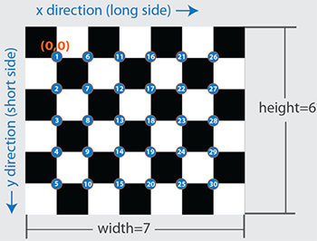
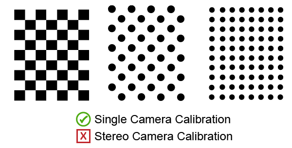
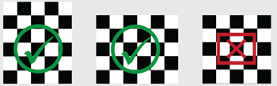
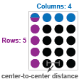
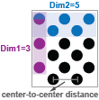
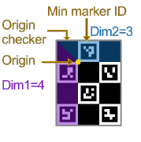
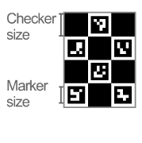
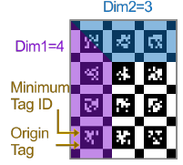

Calibration Patterns
The Camera Calibrator and Stereo Camera Calibrator app support checkerboard, circle grid, AprilGrid, ChArUco board, and custom detector patterns to extract keypoints. The apps provide the ability for you to add a custom pattern detector, and provide built-in templates to help you create it.
What Are Calibration Patterns?
Camera calibration estimates the parameters of a lens, the image sensor of an image, or a video camera. You can use these parameters to estimate structures in a scene and to remove lens distortion. The camera parameters include:
Intrinsics — These relate to the internal characteristics of a camera, such as the focal length, the optical center (also known as the principal point), and the skew coefficient.
Extrinsics — These describe the location (position and orientation) of the camera in the 3-D scene.
For more detail on how intrinsics and extrinsics are calculated, and explanations of single camera (pinhole) and fisheye camera calibration, see What Is Camera Calibration? and Fisheye Calibration Basics, respectively.
To estimate the intrinsics and extrinsics parameters, you need 3-D world points and their corresponding 2-D image points. You can get these correspondences by using multiple images of a calibration pattern. The calibration pattern, sometimes known as a calibration grid or a calibration target, is a repeating pattern of known size and spacing.
For example, a checkerboard pattern consists of alternating white and black squares of equal size. The corners of the squares that lie inside the pattern are used as the control points. These corners can be detected on the 2-D calibration image automatically by using a corner detector algorithm. By assuming the lower-right corner point of the top-left square of the checkerboard is the origin, we can also determine their 3-D world coordinates of the points by using the square size of the checkerboard.

Similar assumptions are used to identify the origin in different types of calibration patterns, so that algorithms can automatically identify them based on their structure. When calibrating stereo cameras, the origin of the pattern must be uniquely identifiable, and thus should not have 180-degree ambiguity. This means, the pattern should not look the same when rotated by 180 degrees. These are examples of calibration patterns that contain 180-degree ambiguity, and should be avoided when calibrating stereo cameras:

Supported Patterns
Computer Vision Toolbox™ contains an example pattern for each of the natively supported pattern types. To open a PDF file for any of these supported patterns, select the link or type the corresponding command at the MATLAB® prompt:
open checkerboardPattern.pdfSymmetric Circles Grid Pattern:
open symmetricCirclesGridPattern.pdfAsymmetric Circles Grid Pattern:
open asymmetricCirclesGridPattern.pdfopen aprilGridPattern.pdfopen charucoBoardPattern.pdf
Checkerboard Pattern
The checkerboard pattern is the most commonly used calibration pattern for camera calibration. The control points for this pattern are the corners that lie inside the checkerboard. Because corners are extremely small, they are often invariant to perspective and lens distortion. The calibrator apps can also detect partial checkerboards, which can be useful when calibrating cameras with wide-angle lenses. Use a checkerboard that contains an even number of squares along one edge and an odd number of squares along the other edge, with two black corner squares along one side and two white corner squares on the opposite side. This enables the app to determine the orientation of the pattern and the origin. The calibrator assigns the longer side as the x-direction. A square checkerboard pattern can produce unexpected results for camera extrinsics.

To prepare the checkerboard pattern:
Attach the checkerboard printout to a flat surface. Imperfections on the surface can affect the accuracy of the calibration.
Measure one side of a checkerboard square. You need this measurement for calibration. The size of the squares can vary depending on printer settings.
To improve detection speed, set up the pattern with as little background clutter as possible.
Circle Grid Patterns
Circle grid patterns, sometimes referred to as a grid of circles, are a class of calibration patterns that use evenly spaced circles to form a grid structure. They are broadly classified into two types: symmetric and asymmetric patterns. Circle grid patterns are favored for calibrating thermal cameras due to their ability to reduce noise that can lead to inaccurate corner detections, a common issue with checkerboard patterns.
| Pattern | Example | Description |
|---|---|---|
Symmetric |  |
|
Asymmetric |  |
|
ChArUco Board Pattern
The ChArUco board is a commonly used calibration pattern made of fiducial markers and typically used for muliti-camera calibration. It combines a grid of black and white squares (checkerboard), which helps in precise corner detection, with ArUco markers, which are small, square, binary codes laced inside the white squares of the checkerboard. You can uniquely identify these codes, providing additional points of reference. The combination of the checkerboard and ArUco markers enables more robust and accurate detection of the position and orientation of the board in space, even under challenging conditions where some markers or corners might be occluded or out of view. This makes ChArUco boards particularly useful for calibrating multiple cameras or multi-camera systems, as achieving full visibility of ChArUco boards in stereo calibration images can be challenging.
| Pattern | Example | Description |
|---|---|---|
ChArUco board |  |
|

|
|
AprilGrid Pattern
AprilGrid patterns, typically used for camera calibration and multi-sensor calibration in UAVs and mobile robots, consist of AprilTag fiducial markers organized into a grid structure of rows and columns. Each AprilTag within this arrangement contributes four keypoints essential for calibration, rendering the AprilGrid pattern the most space-efficient option for this purpose. The unique identifiability of these AprilTags provides additional points of reference, enhancing robustness and accuracy when detecting the position and orientation of the pattern in space. This feature is particularly beneficial under challenging conditions, such as instances where certain markers or corners are occluded or fall outside the field of view of the camera.
| Pattern | Example | Description |
|---|---|---|
AprilGrid pattern |  |
|
|
|

Custom Pattern Detector
You can create a custom pattern by using a template. When loading your images into the calibrator, in the properties dialog box, expand the Custom Pattern section and select Import Pattern Detector to open the template. For an example of creating and using a custom template, see Camera Calibration Using Custom Planar Calibration Patterns.